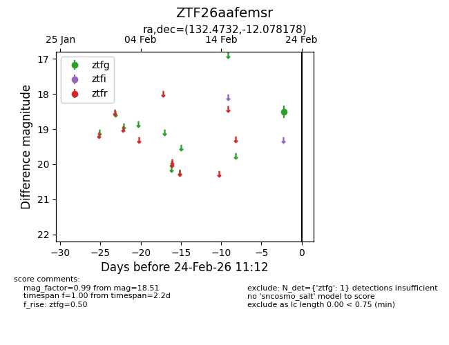
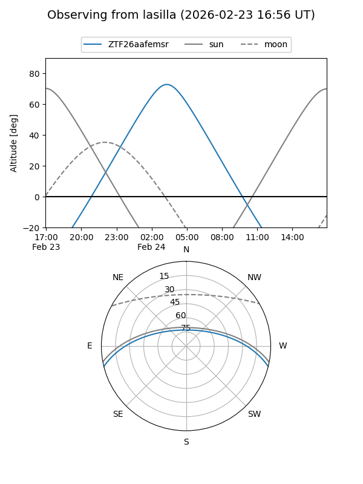
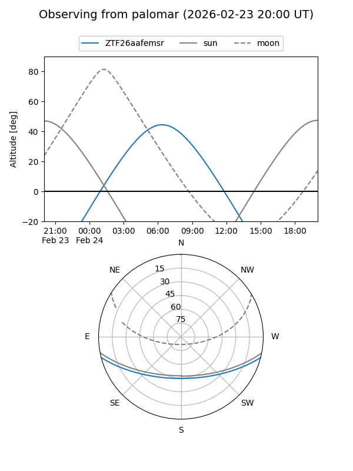

ZTF26aafemsr
Target ZTF26aafemsr at 2026-02-24 11:14
Aliases and brokers:
FINK: link
Lasair: link
ALeRCE: link
alt names
ZTF26aafemsr (ztf,fink_ztf)
Coordinates:
equatorial (ra, dec) = 132.4732,-12.07818
equatorial (HMS+DMS) = 08:49:53.56,-12:04:41.44
galactic (l, b) = (238.4907,+19.55057)
Flags:
Photometry:
last ztfg=18.51
1 ztfg detections
Lightcurve

Visibility


Additional plots